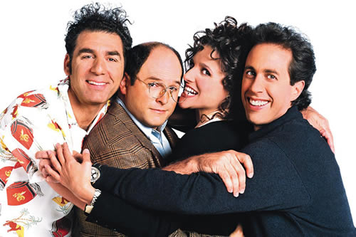

About the Show
Seinfeld (/ˈsaɪnfɛld/; SYNE-feld) is an American television sitcom created by Larry David and Jerry Seinfeld. It aired on NBC from July 5, 1989, to May 14, 1998, over nine seasons and 180 episodes. It stars Seinfeld as a fictionalized version of himself and focuses on his personal life with three of his friends: best friend George Costanza, former girlfriend Elaine Benes, and his neighbor from across the hall, Cosmo Kramer. It is set mostly in an apartment building in Manhattan's Upper West Side in New York City. It has been described as "a show about nothing", often focusing on the minutiae of daily life.
The series was often described as "a show about nothing". The show about nothing was just a joke in an episode many years later, and Larry David and Jerry Seinfeld to this day are surprised that it caught on as a way that people describe the show, because to us it's the opposite of that. Doesn’t everybody do terrible things and have terrible thoughts? Just by trying to be as funny, you’re going to deal with a lot of things that are real, so the show’s really about something. The whole thing about the show being about nothing is ridiculous. Much of the show's humor is based upon repeated use of irony, incongruity, and (oftentimes unfortunate) coincidences.
Top Seinfeld Episodes
- “What is this obsession people have with books? They put them in their houses — like they’re trophies. What do you need it for after you read it?” — Jerry
- “Can you die from an odor? I mean, like if you were locked in a vomitorium for two weeks, could you actually die from the odor?” — Elaine
- “You know, I got a great idea for a cologne. ‘The Beach’. You spray it on and you smell like you just came home from the beach.” — Kramer
- “I will never understand the bathrooms in this country. Why is it that the doors on the stalls do not come all the way down to the floor?” — George